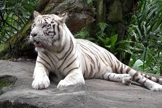

<!DOCTYPE html>
<html lang="en-US">
<head>
    <meta charset="utf-8"/>
    <meta name="viewport" content="width=device-width"/>
    <link rel="stylesheet" href="style.css">
    <title>
        Basic working in HTML5
    </title>
    <meta name="what is a Zoo?" content="A zoo is a facility in which animals are kept within enclosures for public exhibition and often bred for conservation purposes. The term zoological garden refers to zoology, the study of animals."/>
    <link rel="icon" href="zoo.ico" type="image/x-icon"/>
    <link rel="apple-touch-icon-precomposed" size="200X400" href="zoo.ico"/>
  

</head>
<body>
  <header>
   <h1 class="welcome">Welcome to ZOO</h1>
  </header>
    <p class="lang">japanese language of zoo is:<span lang="ja">動物園</span></p>
  <nav class="menu">
    <dl>
    <li><a href="#">Home</a></li>
    <li><a href="#">Book tickets</a></li>
    <li><a href="#">search places</a></li>
    </dl>
  </nav>
  <form>
    <input type="search" name="s" placeholder="search query"/>
    <input type="submit" value="GO"/>
  </form>
  <main>
    <article>
    <strong>Royal menageries</strong>
<dt>Further information: Menagerie</dt>
The Tower of London housed <bdo dir="ltr">England's royal menagerie for several</bdo> centuries (Picture from the <u>15th century,</u> British Library).

The predecessor of the zoological garden is the <i>menagerie</i>, which has a long history from the ancient world to modern times. The oldest known zoological collection was revealed during excavations at Hierakonpolis, Egypt in 2009, of a ca. 3500 BCE menagerie. The exotic animals included hippopotami, hartebeest, elephants, baboons and wildcats.[9] King Ashur-bel-kala of the Middle Assyrian Empire created zoological and botanical gardens in the 11th century BCE. In the 2nd century BCE, the Chinese Empress Tanki had a "house of deer" built, and King Wen of Zhou kept a 1,500-acre (6.1 km2) zoo called Ling-Yu, or the Garden of Intelligence. Other well-known collectors of animals included King Solomon of the Kingdom of Israel and Judah, queen Semiramis and King Ashurbanipal of Assyria, and King Nebuchadnezzar of Babylonia.[10] By the 4th century BCE, zoos existed in most of the Greek city states; Alexander the Great is known to have sent animals that he found on his military expeditions back to Greece. The Roman emperors kept private collections of animals for study or for use in the arena,[10] the latter faring notoriously poorly. The 19th-century historian W. E. H. Lecky wrote of the Roman games, first held in 366 BCE: <br>
<figure>
  
  <figcaption>
    Delhi zoo white tiger
  </figcaption>
</figure>
</p>
<p>
    <span style="font-size: 22px; margin: 21px 0; display: block;">At one time, bear and a bull, chained together, rolled in fierce combat across the sand ...</span> Four hundred bears were killed in a single day under Caligula ... Under Nero, four hundred tigers fought with bulls and elephants. In a single day, at the dedication of the Colosseum by Titus, five thousand animals perished. Under Trajan ... lions, tigers, elephants, rhinoceroses, hippopotami, giraffes, bulls, stags, even crocodiles and serpents were employed to give novelty to the spectacle.[11]

    Charlemagne had an elephant named Abul-Abbas that was given to him by the Abbasid Caliph. Henry I of England kept a collection of animals at his palace in Woodstock which reportedly included lions, leopards, and camels.[12] The most prominent collection in medieval England was in the Tower of London, created as early as 1204 by King John I.
    
    Henry III received a wedding gift in 1235 of three leopards from Frederick II, Holy Roman Emperor, and in 1264, the animals were moved to the Bulwark, renamed the Lion Tower, near the main western entrance of the Tower. It was opened to the public during the reign of Elizabeth I in the 16th century.[13] During the 18th century, the price of admission was three half-pence, or the supply of a cat or dog for feeding to the lions.[12] The animals were moved to the London Zoo when it opened.
    
    Aztec emperor Moctezuma had in his capital city of Tenochtitlan a "house of animals" with a large collection of birds, mammals and reptiles in a garden tended by more than 600 employees. The garden was described by several Spanish conquerors, including Hernán Cortés in 1520. After the Aztec revolt against the Spanish rule, and during the subsequent battle for the city, Cortés reluctantly ordered the zoo to be destroyed.[14]
    <table>
      <colgroup>
        <col />
        <col style="background-color: yellow" />
      </colgroup>
      <tr>
        <th>Data 1</th>
        <th>Data 2</th>
      </tr>
      <tr>
        <td>Calcutta</td>
        <td>Chennai</td>
      </tr>
      <tr>
        <td>Tiger</td>
        <td>Lion</td>
      </tr>
    </table>
    <p>
        <a href="https://www.google.com/url?sa=t&rct=j&q=&esrc=s&source=web&cd=&cad=rja&uact=8&ved=2ahUKEwj-26_BjPH8AhWjzjgGHZPZBzkQFnoECAkQAw&url=https%3A%2F%2Fwww.gktoday.in%2Ftopic%2Fmee-zoo-report-20%2F&usg=AOvVaw1QdQvR-PeVcqouX6wDR5PT">
          Download the report (PDF, 10MB)
        </a>
      </p>
      
      <p>
        <a href="https://www.example.com/video-stream/" target="_blank">
          Watch the video (stream opens in separate tab, HD quality)
        </a>
      </p>
         
</p>
    <p><strong>Enlightenment Era</strong>
    <br>The Versailles menagerie during the reign of Louis XIV in the 17th century<br>
    <dl>
    <dt>Further information: List of zoos</dt>
    
    <dd>The oldest zoo in the world still in existence is the Tiergarten Schönbrunn in Vienna, Austria. It was constructed by Adrian van Stekhoven in 1752 at the order of Emperor Francis I, to serve as an imperial menagerie as part of Schönbrunn Palace. The menagerie was initially reserved for the viewing pleasure of the imperial family and the court, but was made accessible to the public in 1765.[15] In 1775, a zoo was founded in Madrid, and in 1795, the zoo inside the Jardin des Plantes in Paris was founded by Jacques-Henri Bernardin, with animals from the royal menagerie at Versailles, primarily for scientific research and education. The planning about a space for the conservation and observation of animals was expressed in connection with the political construction of republican citizenship.[16]
    </dd>
    </dl>
    <ul>
        <li>The Kazan Zoo, the first zoo in Russia was founded in 1806</li>
        <li>By the Professor of Kazan State University Karl Fuchs.</li>
    </ul>
    <svg width="300" height="200">
      <rect width="100%" height="100%" fill="green" />
    </svg>
    
    <ol>
 <li>The modern zoo until the early 19th century, the function of the zoo was often to symbolize royal power, like King Louis XIV's menagerie at Versailles.</li>
 <li> Major cities in Europe set up <em>zoos </em>in the 19th century, usually using <em>London and Paris </em>as models.</li>
 <li>The transition was made from princely menageries designed to entertain &lt;high society&gt; with strange novelties into public zoological gardens. The new goal was to educate the entire population with <q>information</q> along modern scientific lines. Zoos were supported by local commercial or scientific societies.</li>
 </ol>
    <blockquote>British Empire
    
    The modern zoo that emerged in the 19th century in the United Kingdom,[17]<cite="https://www.google.com/url?sa=t&rct=j&q=&esrc=s&source=web&cd=&cad=rja&uact=8&ved=2ahUKEwj-26_BjPH8AhWjzjgGHZPZBzkQFnoECAsQAQ&url=https%3A%2F%2Fcza.nic.in%2Fannual-reports-of-zoos%2Fen&usg=AOvVaw2Dkihu3WE6AvDonTe6-oXc>" was focused on providing scientific study and later educational exhibits to the public for entertainment and inspiration.[18]
    
    A growing fascination for natural history and zoology, coupled with the tremendous expansion in the urbanization of London, led to a heightened demand for a greater variety of public forms of entertainment to be made available. The need for public entertainment, as well as the requirements of scholarly research, came together in the founding of the first modern zoos. Whipsnade Park Zoo in Bedfordshire, England, opened in 1931. It allowed visitors to drive through the enclosures and come into close proximity with the animals.
    London Zoo, 1835 <a href="#top">Go to top</a>
    
    The Zoological Society of London was founded in 1826 by Stamford Raffles and established the London Zoo in Regent's Park two years later in 1828.[19] At its founding, it was the world's first scientific zoo.[10][20] Originally intended to be used as a collection for scientific study, it was opened to the public in 1847.[20] The Zoo was located in Regent's Park - then undergoing development at the hands of the architect John Nash. What set the London zoo apart from its predecessors was its focus on society at large. The zoo was established in the middle of a city for the public, and its layout was designed to cater for the large London population. The London zoo was widely copied as the archetype of the public city zoo.[21] In 1853, the Zoo opened the world's first public aquarium.
    
directive to strengthen the conservation role of zoos, making it a statutory requirement that they participate in conservation and education, and requiring all member states to set up systems for their licensing and inspection.[100] Zoos are regulated in the UK by the Zoo Licensing Act of 1981, which came into effect in 1984. A zoo is defined as any "establishment where wild animals are kept for exhibition [...] to which members of the public have access, with or without charge for admission, seven or more days in any period of twelve consecutive months", excluding circuses and pet shops. The Act requires that all zoos be inspected and licensed, and that animals kept in enclosures are provided with a suitable environment in which they can express most normal behavior.[100] 
</blockquote>
<a href="https://www.google.com/url?sa=t&rct=j&q=&esrc=s&source=web&cd=&cad=rja&uact=8&ved=2ahUKEwjGi_vtgPH8AhXHRmwGHboIBhsQFnoECFEQAQ&url=https%3A%2F%2Ftaronga.org.au%2Fsydney-zoo&usg=AOvVaw3JSUshHf3VelsShEayRInM" target="_blank">Click here to go to Tarongo zoo sydney<br></a>

<a
  href="https://download.mozilla.org/?product=firefox-latest-ssl&os=win64&lang=en-US"
  download="firefox-latest-64bit-installer.exe">
  Download Latest Firefox for Windows (64-bit) (English, US)<br>
</a>
<a
  href="mailto:nowhere@mozilla.org?cc=name2@rapidtables.com&bcc=name3@rapidtables.com&subject=The%20subject%20of%20the%20email&body=The%20body%20of%20the%20email">
  Send mail with cc, bcc, subject and body
</a>
</article>
</p>
<aside>
        <h2>Related</h2>

        <ul>
          <li><a href="#">Oh I do like to be beside the bird</a></li>
          <li><a href="#">Oh I do like to be beside the animal</a></li>
          <li><a href="#">Although in the North of England</a></li>
          <li><a href="#">It never stops</a></li>
          <li><a href="#">Oh well…</a></li>
        </ul>
      </aside>
<video controls>
<source src="https://www.google.com/url?sa=t&rct=j&q=&esrc=s&source=web&cd=&cad=rja&uact=8&ved=2ahUKEwjW7rD1sPH8AhV7ynMBHZr2Ac4QtwJ6BAgLEAI&url=https%3A%2F%2Fwww.youtube.com%2Fwatch%3Fv%3DRKU6x1n9Hak&usg=AOvVaw0kWprcMtEi0wftiOxNBLwI" type="video/webm"/>
<p>your website doesn't support means please click here to watch the video
<a href="https://www.google.com/url?sa=t&rct=j&q=&esrc=s&source=web&cd=&cad=rja&uact=8&ved=2ahUKEwjW7rD1sPH8AhV7ynMBHZr2Ac4QtwJ6BAgLEAI&url=https%3A%2F%2Fwww.youtube.com%2Fwatch%3Fv%3DRKU6x1n9Hak&usg=AOvVaw0kWprcMtEi0wftiOxNBLwI">click here to watch</a>
  in this link</p>
  <track kind="subtitles" src="subtitles_es.vtt" srclang="es" label="English" />
</video>
<iframe src="https://www.google.com/maps/embed?pb=!1m14!1m12!1m3!1d31122.617875407865!2d80.2226176!3d12.822118399999999!2m3!1f0!2f0!3f0!3m2!1i1024!2i768!4f13.1!5e0!3m2!1sen!2sin!4v1675154190825!5m2!1sen!2sin" width="600" height="450" style="border:0;" allowfullscreen="yes" loading="lazy" referrerpolicy="no-referrer-when-downgrade"></iframe>
<footer>
      <p>©Copyright 2023 by nobody. All rights reversed.</p>
    </footer>
</main>
</body>
</html>